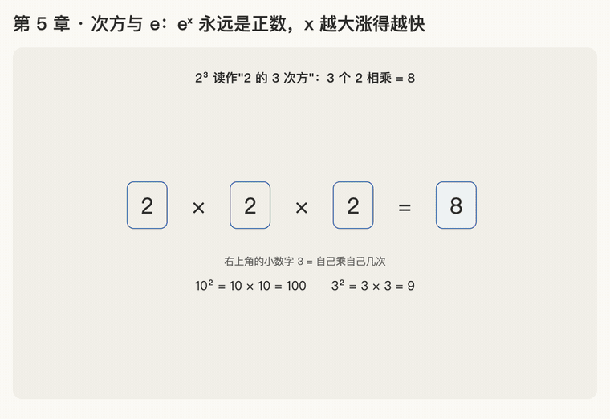

第 5 章 · 次方与 e
本地运行
git clone https://github.com/wikieden/transformer-visual
cd transformer-visual/code/notebooks
pip install jupyterlab torch numpy
jupyter lab ch05_power_and_e.ipynb也可以下载后直接用 VS Code 打开 .ipynb 运行。需要 GPU 的章节在 Colab 里选「代码执行程序 → 更改运行时类型 → GPU」。
本章回答：softmax 公式里的 \(e^{x}\) 是什么？
讲解日期：2026-10-26 · 上一章：第 4 章 按比例取信息 · 下一章：第 6 章 softmax（下）
本章缩写：softmax = soft（柔和的）+ max（取最大）：按大小分比例，不是只挑最大的；exp = exponential（指数）：exp(x) = eˣ；CS336 = Stanford 课程 CS 336（Computer Science 336，Language Modeling from Scratch）；代码里的名字（PyTorch、nn.Linear等）见附录"PyTorch 对照"。全部缩写见 附录 · 缩写与术语表
讲解
第一步：次方
\(2^3\) 读作"2 的 3 次方"，意思是 3 个 2 相乘：\(2\times2\times2=8\)。右上角的小数字 = 自己乘自己几次。
- \(10^2 = 10\times10 = 100\)
- \(3^2 = 3\times3 = 9\)
第二步：0 次方和负数次方
"乘 0 次""乘 −1 次"听起来怪，看规律：
| 写法 | \(2^3\) | \(2^2\) | \(2^1\) | \(2^0\) | \(2^{-1}\) | \(2^{-2}\) |
|---|---|---|---|---|---|---|
| 值 | 8 | 4 | 2 | 1 | 1/2 | 1/4 |
每往右一格就除以 2。 顺着推：
- 0 次方 = 1
- 负数次方 = 正的小数，越来越小，但永远不会变成 0 或负数
第三步：e 是什么
e 是一个固定的数，约 2.71828…，小数点后无限不循环，和 \(\pi\approx3.14\) 一样是数学里的特殊数。
来历：利滚利。 存 1 元，年利率 100%：
| 一年结息几次 | 年底的钱 | 计算 |
|---|---|---|
| 1 次 | 2 | \(2^1\) |
| 2 次 | 2.25 | \(1.5^2\) |
| 4 次 | 2.441 | \(1.25^4\) |
| 12 次 | 2.613 | \((1+\tfrac{1}{12})^{12}\) |
| 365 次 | 2.7146 | \((1+\tfrac{1}{365})^{365}\) |
| 无数次 | 2.71828… | e |
结息越勤钱越多，但有上限，上限就是 e。e 的意思：100% 的增长率连续不断复利一年，变成多少倍。
机器学习为什么用 e： \(e^{x}\) 增长的速度恰好等于它自己的大小，训练时求梯度的数学最简单。换成 2 或 10 当底数 softmax 也能用，选 e 是因为最省事。
第四步：\(e^{x}\)
就是把 2.718 套进次方规则：
| x | 2 | 1 | 0 | −1 | −2 |
|---|---|---|---|---|---|
| \(e^{x}\) | 7.389 | 2.718 | 1 | 0.368 | 0.135 |
\(e^{x}\) 永远是正数；x 越大涨得越快。 x 是小数时用计算器算，不需要手算。
怎么读、怎么写
| 写法 | 中文读法 | 英文读法 |
|---|---|---|
| \(e^{x}\) | e 的 x 次方（也说 x 次幂） | e to the x |
| \(e^{2}\) | e 的 2 次方 / e 的平方 | e squared |
| \(e^{-1}\) | e 的负 1 次方 | e to the minus one |
| \(2^{3}\) | 2 的 3 次方 / 2 的立方 | two cubed |
- e 按英文字母读（"伊"）。
- 打字写
e^x，^表示次方。 - 代码写
exp(x)/torch.exp(x)，exp = exponential（指数），和 \(e^{x}\) 是同一个东西。
动画演示：次方、利滚利逼近 e、eˣ 曲线

可交互版：animations/05-power-and-e.html（要能点按钮、拖滑块，需要用本地服务打开，见 animations/README.md"跑起来看"）。
怎么看：
- 2³ = 2 × 2 × 2；
- 指数每少 1 就除以 2：2⁰ = 1，负数次方是越来越小的正数（第二步）；
- 利滚利：一年结息 1、2、4、12、365 次，越来越接近上限 e ≈ 2.718（第三步）；
- \(e^x\) 曲线：左边贴着 0 但永远在 0 上面，右边越涨越快（第四步）；滑块：拖 x 看 \(e^x\) 的值。
练习与作答记录
题：按表格规律再往右推一格，\(2^{-2}\) 等于多少？
作答：1/4。✓（1/2 再除以 2）
追问记录：本章是因为问了"\(e^{x}\) 是什么意思""\(e^{x}\) 怎么读""e 到底是什么数"才补讲的，这几处是之前跳过的前置知识。
口诀
几次方就是几个自己相乘；0 次方等于 1，负次方是小数，永远不为负。
e 是利滚利的上限，约 2.718；\(e^{x}\) 永远是正数，x 大一点涨很多；代码写 exp(x)。
本章复习卡片
R04 次方规律 · R05 e 是什么 / 怎么读（见 review.md）
附录 · 延伸阅读
留给以后深入学习用，不影响本章主线。★ 是建议先读的。
- 本地论文的文本版在materials/text/papers/，表里的行号就是指这个文本版。
- CS336 handout 在cs336-spring2025/materials/text/cs336_spring2025_assignment1_basics.txt。
推荐阅读
| 读什么 | 读哪里 | 读它为了什么 |
|---|---|---|
| ★ 3Blue1Brown《微积分的本质》 | What's so special about Euler's number e? 那一集 | 为什么偏偏是 e：\(e^{x}\) 的变化速度等于它自己 |
| Goodfellow《Deep Learning》 | §4.1 Overflow and Underflow | \(e^{x}\) 长得太快，电脑存不下时怎么办（第 6 章 softmax 会用到） |
数学原理
- 指数法则：同底相乘，指数相加。负数次方 = 倒数。0 次方 = 1。
- e 的定义：\((1 + 1/n)^n\) 在 n 越来越大时逼近的数，约 2.71828。
- e 的特别之处：\(e^{x}\) 的导数（变化速度）还是它自己。所以训练时求梯度特别方便，这是 softmax 选 e 的数学原因之一。
- ln（自然对数）：\(e^{x}\) 的反操作。以后的交叉熵 loss、log-softmax 都会用到。
公式清单
| 公式 | 意思 |
|---|---|
| \(a^m \cdot a^n = a^{m+n}\) | 同底相乘，指数相加 |
| \(a^{-n} = \frac{1}{a^n},\ a^0 = 1\) | 负数次方、0 次方 |
| \(e = \lim_{n \to \infty} (1 + \frac{1}{n})^n \approx 2.71828\) | e 的定义 |
| \(\frac{d}{dx} e^{x} = e^{x}\) | 导数还是它自己 |
| \(\ln(e^{x}) = x,\ e^{\ln x} = x\) | ln 和 \(e^{x}\) 互为反操作 |
| \(e^{a-b} = \frac{e^{a}}{e^{b}}\) | 下一章证明 softmax 性质时要用 |
PyTorch 对照：把本章的数字用代码算一遍
代码在仓库本地
transformer-deep-dive/solutions/chapter-code/ch05_power_and_e.py，配套测试tests/test_ch05_08.py（在线版不带代码文件，下面摘了关键几行）。Mac 上直接能跑，不需要 GPU：
bash cd transformer-deep-dive/solutions/chapter-code uv run python ch05_power_and_e.py
讲义 ↔ 代码：
| 讲义 | 公式 / 说法 | PyTorch 写法 | 跑出来 |
|---|---|---|---|
| 次方 | \(2^3, 2^2, \dots, 2^{-2}\) | 2.0 ** torch.arange(3, -3, -1) |
[8, 4, 2, 1, 0.5, 0.25] |
| 利滚利 | \((1+\tfrac1n)^n\) | (1 + 1 / n) ** n |
n = 365：2.71457；n = 100 万：2.71828 |
| e | e ≈ 2.71828 | math.e、torch.exp(torch.tensor(1.0)) |
2.718281828…、2.7182817 |
| \(e^{x}\) | \(e^{2}, e^{1}, e^{0}, e^{-1}, e^{-2}\) | torch.exp(x) |
[7.389, 2.718, 1, 0.368, 0.135] |
| 增长速度 = 自己 | \((e^x)' = e^x\) | torch.exp(t).backward() |
x = 1 处斜率 2.718 |
关键几行：
2.0 ** torch.arange(3, -3, -1) # ** 是次方
torch.exp(torch.tensor([2.0, 1.0, 0.0, -1.0, -2.0]))
t = torch.tensor(1.0, requires_grad=True)
torch.exp(t).backward() # 算 e^x 在 x = 1 处的变化率
t.grad # 2.718 = e^1
代码里才看得到的：
- float32 只有大约 7 位有效数字：
math.e是 2.718281828459045，torch.exp(1)是 2.7182817。模型里用的就是这种精度，够用。 requires_grad和backward()（requires gradient：需要 / 梯度）：标上requires_grad=True，PyTorch 会记住这个数参与了哪些计算；backward()一键算出"它变一点点，结果变多少"（导数），放在.grad里。这里验证了 \(e^x\) 的增长速度等于它自己。训练就靠这个，续篇第 2 章细讲。
自己改一改：
- 把
t改成 2.0，.grad应该是多少？先猜再跑。